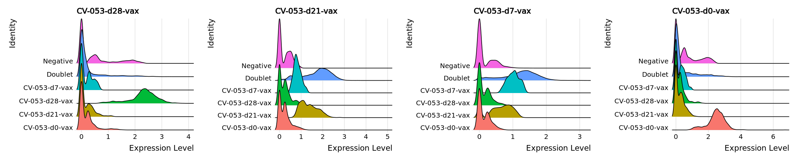

For this dataset, each sample is comprised of cells from multiple patients hashtagged with a unique oligo sequence. To demultiplex which patient the cells were retrieved from, a demultiplexing algorithm must be used to quantify the oligo sequences for each cell and assign each cell to a patient. The most common approaches to date is using the HTOdemux [Stoeckius et al.; 2018] or the MULTIseqDemux [McGinnis et al.; 2019] algorithms. Besides assigning each cell back to each patient, these algorithms are able to identify homolytic/heterolytic “Doublet” and “Negative” cells based on high/multiple and low oligo counts respectively. These poor quality droplets are a common issue with droplet-based sequencing when there are multiple or no cells found in each droplet, and removal of these droplets could prevent false-positive findings.
Aim
Run HTODemux, MULTIseqDemux pipelines to demultiplex cells.
Compare their strengths and efficiency.
5.1 Setup
# set up environmentsuppressMessages({library(scUnify)setwd("/nemo/lab/caladod/working/Matthew/project/matthew/MH_GSE247917")})# load seurat objectsobj.list <-qread("seurat/1_processing/1.2_GSE247917_raw.qs")
Warning message:
“replacing previous import ‘cowplot::get_legend’ by ‘ggpubr::get_legend’ when loading ‘scUnify’”
Warning message:
“replacing previous import ‘cowplot::align_plots’ by ‘patchwork::align_plots’ when loading ‘scUnify’”
Warning message:
“replacing previous import ‘biomaRt::select’ by ‘rstatix::select’ when loading ‘scUnify’”
Warning message:
“replacing previous import ‘scales::viridis_pal’ by ‘viridis::viridis_pal’ when loading ‘scUnify’”
# inspect object and make sure active assay is RNAobj.list
$CV10
An object of class Seurat
23862 features across 19484 samples within 3 assays
Active assay: RNA (23797 features, 0 variable features)
1 layer present: counts
2 other assays present: HTO, ADT
$CV12
An object of class Seurat
16451 features across 17366 samples within 3 assays
Active assay: RNA (16386 features, 0 variable features)
1 layer present: counts
2 other assays present: HTO, ADT
5.2 Calculate Gene Fractions
Before demultiplexing, we need to first calculate the fraction of mitochondrial, ribosomal, haemoglobin, T/B-cell recepter (TCR/BCR) and MHC reads to identify poor quality cells, which can be informative of accurate demultiplexing. The function below will perform the calculations of key parameters that identifies poor quality cells.
Note
Please navigate to the next chapter <Quality Control> for a detailed explanation of the wrapper function, outputs, and interpretations.
Before demultiplexing HTO library, we will inspect and remove any redundant/low expressing hashtags. For each sample, below we will quantify the expression levels for for each hashtag in each sample.
Quantification show that all hashtags are abundantly expressed across the samples and can therefore proceed to demultiplexing.
# calculate how many cells expresses each tagmetalist <-list()for(x in1:length(obj.list)){ metalist[[x]] <-data.frame(sample =names(obj.list)[x], count =apply(obj.list[[x]][["HTO"]]$counts, 1, function(row) sum(row !=0)))}metalist <-bind_rows(metalist)metalist
A data.frame: 8 × 2
sample
count
<chr>
<int>
CV-011-d120-booster
CV10
16404
CV-001-d28-booster
CV10
16189
CV-001-d7-booster
CV10
19476
CV-001-d0-booster
CV10
17218
CV-053-d28-vax
CV12
9232
CV-053-d21-vax
CV12
12223
CV-053-d7-vax
CV12
10337
CV-053-d0-vax
CV12
11173
5.4 Run HTODemux
First we will run the the wrapper function below to demultiplex the cells with the HTODemux algorithm in default settings.
# if necessary, add one pseudocount to each oligo to run HTODemux without errorfor(x in1:length(obj.list)){ obj.list[[x]] <-run_htodemux(obj.list[[x]], add.one = F)}
Normalizing layer: counts
Normalizing across cells
As of Seurat v5, we recommend using AggregateExpression to perform pseudo-bulk analysis.
This message is displayed once per session.
Cutoff for CV-011-d120-booster : 57 reads
Cutoff for CV-001-d28-booster : 49 reads
Cutoff for CV-001-d7-booster : 146 reads
Cutoff for CV-001-d0-booster : 49 reads
Normalizing layer: counts
Normalizing across cells
Cutoff for CV-053-d28-vax : 20 reads
Cutoff for CV-053-d21-vax : 2 reads
Cutoff for CV-053-d7-vax : 8 reads
Cutoff for CV-053-d0-vax : 24 reads
Below we will visualize the output from HTODemux to inspect the quality of the demultiplexing algorithm. We quantified the percentage of “Singlet”, “Doublet” and “Negative” cells (empty droplets or cells with no tags) for each sample.
HTODemux assigned <50 % of cells as “Singlet”, which is not great.
# aggregate HTODemux output into a dataframemetalist <-list()for(x inseq_along(obj.list)){ metalist[[x]] <- obj.list[[x]]@meta.data}metalist <-bind_rows(metalist)## Quantify % of Singlet cells left from each samplemetalist_qc <- metalist %>%group_by(samples, HTO_classification.global) %>%summarize(count =n()) %>%group_by(samples) %>%mutate(pct = count*100/sum(count)) %>%filter(!HTO_classification.global %in%c("Doublet", "Negative")) %>%group_by(samples) %>%summarize(pct =sum(pct))metalist_qc
A tibble: 2 × 2
samples
pct
<chr>
<dbl>
CV10
49.19421
CV12
26.30427
# visualize % of singlet cells from each sampleoptions(repr.plot.width=5, repr.plot.height=4)metalist %>%group_by(samples, HTO_classification.global) %>%summarize(count =n()) %>%group_by(samples) %>%mutate(pct = count*100/sum(count)) %>%ggplot(aes(x = samples, y = pct, fill = HTO_classification.global)) +geom_col(color ="white") +facet_wrap(~HTO_classification.global) +guides(fill =guide_legend(title ="")) +theme_bw() +ylim(c(0, 100)) +theme(axis.text.x =element_text(angle =90, vjust =0.5, hjust=1)) +xlab("") +ylab("Proportions (%)") +theme_border() +facet_aes()
In addition, we can inspect different parameter below to see if “Doublet” and “Negative” cells are assigned appropriately. Low nFeature/nCount typically indicate if the droplet is empty, hence “Negative”. Vice versa, high nFeature/nCount indicate “Doublet” cells as mRNA contents in a droplet is doubled.
HTODemux assignments do reflect nature of the “Negative” and “Doublet” cells in our case looking at nFeature_RNA & nCounts_RNA mainly.
Warning message:
“Using `size` aesthetic for lines was deprecated in ggplot2 3.4.0.
ℹ Please use `linewidth` instead.”
5.5 Run MULTIseqDemux
Next we also will also implement MULTIseqDemux algorithm as a benchmark. HTODemux has been suggested to predict more false-positive doublets compared to MULTIseqDemux (see GitHub & Paper)
# run MULTIseqDemuxfor(x in1:length(obj.list)){ obj.list[[x]] <-run_multiseqdemux(obj.list[[x]], add.one = F)}
Normalizing layer: counts
Normalizing across cells
Normalizing layer: counts
Normalizing across cells
Below we will visualize the output from MULTIseqDemux to inspect the quality of demultiplexing. Again we quantified the percentage of “Singlet”, “Doublet” and “Negative” cells for each sample.
MUTLIseqDemux assigned >80% and >40 % of cells assigned as “Singlet” in CV10 and CV12 respectively, seemingly capturing more cells compared to HTODemux.
# aggregate MULTIseqDemux output into a dataframemetalist <-list()for(x inseq_along(obj.list)){ metalist[[x]] <- obj.list[[x]]@meta.data}metalist <-bind_rows(metalist)# quantify % of Singlet cells left from each samplemetalist_qc <- metalist %>%group_by(samples, MULTI.global) %>%summarize(count =n()) %>%group_by(samples) %>%mutate(pct = count*100/sum(count)) %>%filter(!MULTI.global %in%c("Doublet", "Negative")) %>%group_by(samples) %>%summarize(pct =sum(pct))metalist_qc
A tibble: 2 × 2
samples
pct
<chr>
<dbl>
CV10
84.33587
CV12
42.67534
# visualize % of singlet cells left from each sampleoptions(repr.plot.width=5, repr.plot.height=4)metalist %>%group_by(samples, MULTI.global) %>%summarize(count =n()) %>%group_by(samples) %>%mutate(pct = count*100/sum(count)) %>%ggplot(aes(x = samples, y = pct, fill = MULTI.global)) +geom_col() +facet_wrap(~MULTI.global) +guides(fill =guide_legend(title ="")) +ylim(c(0, 100)) +theme_bw() +theme(axis.text.x =element_text(angle =90, vjust =0.5, hjust=1)) +xlab("") +ylab("Proportions (%)") +theme_border() +facet_aes()
Again, we can inspect different parameter below to see if “Doublet” and “Negative” cells are assigned appropriately.
MULTIseqDemux assignments also reflect nature of the “Negative” and “Doublet” cells looking at nFeature_RNA & nCounts_RNA mainly.
Furthermore we will inspect how well HTODemux and MULTIseqDemux separated the hashtag signals in both samples.
MULTIseqDemux seems to perform slightly better in terms of separating the hashtag signals in both sequencing runs with minimal overlaps, especially for CV-053-d21-vax.
# ridge plot of hashtag signals for CV10options(repr.plot.width=20, repr.plot.height=4)RidgePlot(obj.list[[1]], assay ="HTO", group.by ="hash.ID", features =rownames(obj.list[[1]][["HTO"]]), ncol =4)RidgePlot(obj.list[[1]], assay ="HTO", group.by ="MULTI_ID", features =rownames(obj.list[[1]][["HTO"]]), ncol =4)
Picking joint bandwidth of 0.0667
Picking joint bandwidth of 0.0643
Picking joint bandwidth of 0.109
Picking joint bandwidth of 0.0714
Picking joint bandwidth of 0.0729
Picking joint bandwidth of 0.0678
Picking joint bandwidth of 0.11
Picking joint bandwidth of 0.0698
# ridge plot of hashtag signals for CV12options(repr.plot.width=20, repr.plot.height=4)RidgePlot(obj.list[[2]], assay ="HTO", group.by ="hash.ID", features =rownames(obj.list[[2]][["HTO"]]), ncol =4)RidgePlot(obj.list[[2]], assay ="HTO", group.by ="MULTI_ID", features =rownames(obj.list[[2]][["HTO"]]), ncol =4)
Picking joint bandwidth of 0.0609
Picking joint bandwidth of 0.0685
Picking joint bandwidth of 0.0582
Picking joint bandwidth of 0.0799
Picking joint bandwidth of 0.0511
Picking joint bandwidth of 0.0622
Picking joint bandwidth of 0.044
Picking joint bandwidth of 0.0673

5.7 Evaluation
We will now merge the list of Seurat objects together as a single object to evaluate the demultiplexing algorithms.
HTODemux and MULTIseqDemux algorithm outputs are mostly consistent. HTODemux called more negative cells than MULTIseqDemux.
# merge seurat objects and join all layersobj <-merge(obj.list[[1]], obj.list[2:length(obj.list)])obj <-join_layers(obj)
# compare outputs from HTODemux and MULTIseqDemuxtable(HTODemux=obj$HTO_classification.global, MULTIseqDemux=obj$MULTI.global)
MULTIseqDemux
HTODemux Doublet Negative Singlet
Doublet 4787 667 2043
Negative 154 6089 8957
Singlet 373 937 12843
MULTIseqDemux seem to outperform HTODemux in terms of “Singlet” assignment and comparing hashtag signals. In the following chapters, we will continue subsequent analysis using MULTIseqDemux output rather than HTODemux.